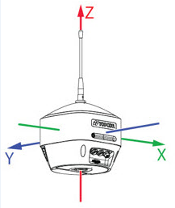
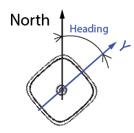
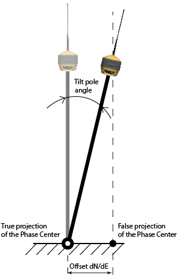

The ELC tab displays the following parameters calculated by electronic level and compass of HiPer VR/HiPer HR receiver:
A heading of HiPer VR/HiPer HR receiver is an angle between the receiver's Y-axis and North direction. The relative position of the axes of HiPer VR/HiPer HR receiver is displayed on the figure below.
|
 |
 |
The current heading value is displayed in the Heading field. The red end of the needle always points to magnetic north and the black end points to magnetic south. An angle between the red end of the needle and the green triangle at the top of the tab is current heading value, presented in graphical form.
Note: No heading is displayed if the receiver cannot compute it.
The value of the current tilt of the receiver in relation to a vertical axis is displayed using two ways: in the Tilt field along with specifying the tilt value for both directions, as well as in a graphical form, as a deviation of the blue "bubble" in the ELC tab.

The Level & Compass dialog allows to specify a range of level offset. The Level Range value is 10 degrees, by default. That means, that when the receiver's tilt from the vertical axis equals 10 degrees, the graphical "bubble" deviates as far as possible from the center and touches the outer circumference of the graphic compass.
When you perform a receiver leveling it is necessary to ensure that the on-screen blue "bubble" is inside a blue circle.
Note: No tilt values are displayed if the receiver cannot compute them.
The Mag.Field field displays the intensity of the magnetic field in microtesla (µT).
You can enable/disable the ELC sensor and perform its calibration using settings on the Level & Compass tab.